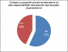
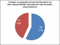

{kind=link}
 Discurs Simona Calapodescu
Discurs Simona Calapodescu
 Cross 1
Cross 1
 Discurs Teodora Pătrăuceanu
Discurs Teodora Pătrăuceanu
 Cross 2
Cross 2
 Discurs Andreea Lupaşcu
Discurs Andreea Lupaşcu
 Discurs Constantin Hriţac
Discurs Constantin Hriţac
 Intrebări auditoriu

Vot auditoriu final
Intrebări auditoriu

Vot auditoriu final
{kind=link}
{kind=link}
{kind=link}
{kind=link}
{kind=link}
{kind=link}
{kind=link}
Iasi, Universitatea A.I. Cuza, 9 decembrie 2010, ora 18
Echipa Afirmatoare: Simona Calapodescu - studenta Drept si Andreea Lupascu, studenta Drept
Echipa Negatoare: Teodora Patrauceanu, studenta Comunicare si Constantin Hritac director Ziarul de Iasi
moderator: Liviu Antonesei - publicist, profesor Facultatea de Stiintele Educatiei
Simona Calapodescu ( Afirmator 1 )
Bună-ziua doamnelor și domnilor, numele meu este Simona Calapodescu, datoria noastră este să vă demonstrăm că, în sfarșit, este timpul ca televiziunile private să aibă responsabilități educaționale. Care este filosofia echipei afirmatoare? În primul rând atenționăm că media de fiecare data pretinde că este formatoare de opinie, și de asemenea că este a patra putere în stat. Pentru asta trebuie să și dai ceva în schimb, să formezi în mod responsabil această opinie. Considerăm că media, atât timp cât vrea un public avizat, trebuie să-l și formeze, pentru că, în cele din urma, „culegi ceea ce semeni”.
În primul rand, vă vom demonstra că televiziunile private au mijloacele pentru a face acest lucru. Acestea beneficiază de o popularitate foarte mare, iar pentru a susține acestă idee voi invoca un studiu la nivel mondial care arată că oamenii se uită în medie la televizor timp de 3 ore pe zi. În România pe de alta parte, un cetățean se uită la televizor preț de șase ore pe zi, ceea ce demonstrează ca acest instrument joacă un rol foarte important în viața de zi cu zi. Mai departe, este important să precizăm că oamenii au mai multă încredere în media decât în guvernanți, ceea ce înseamnă că măsurile pe care le putem implementa prin programele de la televizor vor avea un impact mult mai mare decât o campanie sociala dusă fără acest mijloc de către Guvern. Nu în ultimul rând, considerăm că televiziunile private sunt cele mai potrivite pentru a-și asuma responsabilitățile educaționale pentru că acestea sunt cele mai populare, lucru demonstrat de un studiu care arată că televiziunile de stat sunt a șasea preferință pentru vizionare a românilor. De aici putem deduce că televiziunile private au cel mai mare impact asupra cetățenilor noștri.
Mai departe, vom demonstra că există șansa ca implementarea acestei măsuri să aiba o eficiență foarte mare. După cum am precizat, televiziunea are un rol masiv în viața românilor, cu atât mai mult cu cât 9 din 10 romani consideră că principala modalitate prin care ei își formează cultura generală este prin intermediul televizoarelor, nu al cărților, nici măcar al popularului internet sau al presei. Având în vedere că acordăm mai multă încredere televizorului decât oricărui alt mijloc de informare, considerăm că televiziunea poate să ne schimbe cel mai mult obiceiurile culturale.
În cele din urma putem considera că televiziunea are o datorie normativă să facă acest lucru. În primul rând pentru că CNA-ul prevede în Codul de Reglementări la art. 5 că „televiziunile trebuie să difuzeze niște programe prin care să informeze publicul, să promoveze cultura românească si cea europeană” Acest lucru este însă prea vag definit, iar pentru a concretiza aceste măsuri ele trebuiesc clar impuse. Considerăm că echipa afirmatoare a reușit să vă demonstreze ca există mijloacele pentru ca televiziunile private să își asume această responsabilitate, că există o necesitate din partea publicului, lucru atestat de faptul că una din două persoane își manifestă dorința de a viziona mai multe programe culturale, dar si o datorie a mediei în acest sens. Vă mulțumesc!
Cross1
Liviu Antonesei: Mulțumesc Simona pentru discursul afirmator. Acum echipa negatoare are datoria să pună în dificultate echipa oponentă.
Constantin Hrițac: Sunt nelămurit în privința mijlocului prin care vreți să creați această responsabilitate. Doriți să adoptați o lege, să cereți Parlamentului să schimbe legislația?
Simona Calapodescu: Da, chiar există o inițiativă parlamentară prin care se încearcă introducerea unei perioade de timp limitate în care să fie promovate artele, cultura românească, europeană.
Teodora Pătrăuceanu: Educația se face variat, în funcție de fiecare persoană. Cum poți educa un individ fără să știi backgroundul său, folosind televiziunea?
Simona Calapodescu: Având în vedere faptul că televiziunea este o metodă de influențare a masei, considerăm că își va atinge scopul.
Teodora Pătrăuceanu: Ati mai susținut că televiziunea este o foarte bună metodă de educație. Cum rămâne cu familia sau învățămantul? De ce să acordăm acest rol televiziunii?
Simona Calapodescu: Familia și învățămantul au un rol crucial în educație, dar având în vedere că televiziunea ocupă un spațiu atât de important, considerăm că ar trebui să aibă un aport la educația oamenilor.
Constantin Hrițac: Considerați că toate televiziunile private ar trebui să se supuna acestei legi?
Simona Calapodescu: Ar fi discriminatoriu să obligăm anumite televiziuni să implementeze aceste metode, și altele nu.
Teodora Pătrăuceanu: Cum rămâne cu libertatea televiziunilor private?
Simona Calapodescu: Se va manifesta sub forma posibilității de a alege modalitatea în care să promoveze aceste emisiuni culturale. De exemplu cum face un post de televiziune, dând înaintea filmelor difuzate o înregistrare cu un comentator care explică backgroundul respectivei pelicule.
Liviu Antonesei: A expirat timpul, acum urmeaza discursul de cinci minute al primului vorbitor al echipei negatoare care va contesta teza.
Teodora Pătrăuceanu (negator 1)
Bună-ziua, sunt Teodora Pătrăuceanu și fac parte alături de domnul Hritac în echipa negatoare. Susținem că nu este timpul ca posturile de televiziune private să aibă responsabilități educaționale față de public. În primul rand televiziunile private au dreptul să își aleaga singure grila de programe pentru că se axează în principal pe profit, deci au o strategie personalizată în acest sens. Emisiunile difuzate sunt construite în funcție de cererea publicului, spre exemplu, conform unui studiu realizat de Mediafax, în 2009, peste 35% din publicul țintă al Pro-TV-ului urmărește știrile de la ora 17.
Mai departe, am dori să clarificăm noțiunea de emisiune educaționala, care poate oferi informații din diferite domenii: politic, economic, culturale sau sociale. Difuzarea lor este deja practicată și nu vedem de ce ar trebui să impunem un anumit număr de programe educative cum a propus echipa afirmatoare, când aceste posturi deja au o grilă educativă. De exemplu Discovery sau National Geographic sunt posturi care asigură varietatea de care are nevoie societatea, în cele din urmă depinzând de individ dacă vrea să le aleagă sau nu. Astfel, noi identificăm o problemă la nivelul telespectatorilor care preferă să urmărească o telenovelă în detrimentul unei emisiuni științifice, sau un show de divertisment în defavoarea unui documentar. De ce să îngrădim pe cineva să aleaga emisiuni culturale, dacă el nu vrea să facă asta, din moment ce el poate oricând să aleagă un post care nu difuzează în momentul respectiv un astfel de program? Având în vedere cele discutate, efectul implementării măsurii susținute de echipa afirmatoare va fi unul nul, dacă nu chiar negativ. În primul rând, pentru că omul are libertatea de a alege ce să vizioneze, și în al doilea rand pentru că televiziunea privată este o instituție care își alege singură ceea ce vrea să promoveze, în funcție de cererea de pe piață.
Totuși, cine are responsabilitatea educației? Este televiziunea capabilă sa facă acest lucru? Educația trebuie făcută de către familie, în învățămant, sistematic și în funcție de nevoile fiecărei persoane.
Mai departe, trebuie luat în discuție sensul substantivului „responsabilitate”, care conform Dex-ului este obligația de a efectua un lucru. De ce să fie televiziunea privată obligată să difuzeze un anumit tip de program, cand prin definiția ei este liberă să își aleagă domeniul de activare. Mai mult decât atât, conform legii 41/1994 Societatea Romană de Televiziune este singura responsabilă cu educarea publicului.
Vă mulțumesc!
Cross 2
Liviu Antonesei: Mulțumesc, Teodora. Acum echipa care a afirmat moțiunea are ocazia „să hărțuiasca” oponenții în chestionarea de trei minute.
Simona Calapodescu: În legătura cu dreptul de a-și alege grila, știați de raportul trimestrial pe care televiziunile trebuie să îl prezinte la CNA , cu perioada pe care au acordat-o programelor în limba romană?
Constantin Hrițac: Acolo nu este vorba de educație, acolo este vorba de principii de emisie în limba română, de principii de emisie pentru minorități. Acestea sunt principii democratice asupra cărora am convenit cu toții prin Constituția Romaniei, pe care am votat-o . Or cu aceste măsuri nu facem decat să aplicăm Constituția, nu facem educație, sunt două aspecte distincte.
Simona Calapodescu: Dar dacă am introduce o alta clauză prin care am introduce si educația ca fiind una dintre responsabilitățile televiziunii, conform Constituției?
Constantin Hrițac: Răspunsul a fost dat de Teodora: nu putem defini educația. La ce vă referiți cand folosiți aceste termen? La definiția dată de Dex? Astăzi am stat de vorbă cu un sirian din Iași. Definiția educației la noi este aceeași cu cea din Siria, și totuși educația este diferită în Siria față de a noastră.
Simona Calapodescu: În ceea ce privește faptul că televiziunea ar trebui să țină cont de factorii sociali, acest lucru nu ar fi posibil pentru că televiziunea este o modalitate de informare în masă.
Constantin Hrițac: Factorii sociali se manifestă pe piață, creaza presiune, și de aceea televiziunile trebuie să țină cont de piață. Face rating sau nu?
Andreea Lupascu: Recunoașteți faptul că acest lucru s-ar putea să fie un cerc vicios, că s-ar putea să nu mai știm de fapt, cine a provocat conflictul dintre televiziune și educație?
Constantin Hrițac: Dacă un cerc vicios îmi aduce bani, de ce să nu îl folosesc?
Andreea Lupașcu: Pentru că acest lucru s-ar putea să se întoarcă tocmai împotriva societății, afectând chiar profitul economic pe care îl urmărim.
Constantin Hrițac: Eu îmi urmăresc profitul meu, individual, indiferent de cel al societății.
Simona Calapodescu: Nu ar trebui să punem totuși anumite restricții pentru a nu fi exploatați de către media?
Constantin Hrițac: Ca telespectator ar trebui să îmi dau singur seama, nu este nevoie de intervenția statului pentru a impune acest control.
Simona Calapodescu: De ce televiziunea nu ar putea să fie un mijloc complementar de a încuraja educația, pe lângă familie și școală?
Constantin Hrițac: Fără doar și poate televiziunea poate fi un mijloc complementar de educație, dar nu trebuie folosit forțat. Teodora Pătrăuceanu: Televiziunea poate fi un mijloc complementar de educație, dar credeți că dacă și l-ar asuma deplin ar mai avea același rating?
Simona Calapodescu : Probabil că nu, dar poate fi schimbat acest lucru.
Liviu Antonesei: Mulțumesc, acum echipa afirmatoare are dreptul la un ultim cuvânt.
Andreea Lupaşcu (Afirmator 2)
Bună ziua, îmi propun să susţin în continuare şi să întăresc poziţia echipei afirmatoare prin a sublinia această necesitate şi de ce la urma urmei avem nevoie de educaţie. Am să încep tocmai prin a explica cum educaţia este un principal pion în creşterea economică a unei ţări şi atunci când subminăm acest aspect important- al educaţiei, al cercetării, al inovaţiei - toate aceste aspecte se leagă între ele, atunci în cele din urmă, noi vom fi cei care vom ieşi în pierdere. Asta se va petrece căutând un profit imediat, profit care, să mai aduc aminte, este un profit al unor entităţi private şi care nu se întoarce în societate la fel de puternic ca profitul care este generat de către educaţie. Acest lucru s-a întâmplat de altfel în Germania, în Japonia, imediat după cel de-al Doilea Război Mondial, când aceste societăţi erau distruse, în Japonia două oraşe chiar au fost rase de pe suprafaţa Pământului. Şi ceea ce au făcut ei, guvernanţii, a fost să investească în educaţie. Am pomenit acest lucru şi s-a dovedit că cercetarea a reprezentat principalul motor economic al acestor ţări. Am stabilit acest lucru, deci: educaţia poate să ne scoată de acolo de unde Pro Tv-ul nu ne prea poate scoate. Şi mai departe am să explic de ce avem totuşi această responsabilitate.
După cum v-a vorbit colega mea, vorbim despre a patra putere în stat. Dacă invocăm acest lucru, că suntem cea de-a patra putere în stat şi noi ca televiziuni cerem respect, cerem să ni se acorde libertatea de expresie în presă, ar trebui în acelaşi timp să nu folosim acest lucru doar ca pe o justificare pentru a scoate la iveală anumite mizerii, pentru a produce profit, ci să ne asumăm şi responsabilitatea care vine cu acest statut. Aşa cum Parlamentul şi-a asumat faptul că trebuie să facă legi care să fie în folosul societăţii, deoarece conduce, are această influenţă şi în cele din urmă hotărăşte evoluţia unei societăţi. Dacă punem pe această listă şi presa, alături de Parlament, de justiţie, atunci haideţi să îi dăm şi ei nişte atribuţii.
După cum v-am explicat în discursul anterior, presa are această putere, în primul rând pentru că oamenii au ajuns să aibă încredere în televiziune. Copiii petrec mai mult timp în faţa televizorului decât alături de părinţi, ceea ce înseamnă că există această expunere constantă la informaţiile care vin de la televiziune. Chiar am o recentă dovadă: ceea ce s-a întâmplat cu un copil acum doi ani. A fost un scandal mediatic imens, scos la iveală de către cei de la Hotnews: doi jurnalişti de la Otv au acuzat un copil, înainte de a face investigaţiile necesare, că a omorât un alt coleg într-o joacă, fără să se ducă la spital şi la organele necesare pentru a investiga, pentru a-şi asuma responsabilitatea de a-şi îndeplini sarcina corect, aşa cum ar trebui. Şi acest lucru a fost permis tocmai pentru că vânau fără scrupule profitul. La astfel de exemple se poate ajunge.
Un alt exemplu, la fel de celebru, este cel de la Columbine. Cred că mulţi dintre voi aţi văzut documentarul lui Michael Moore. Acolo explică care a fost de fapt impactul showului mediatic al televiziunilor, a violenţei din televiziune, care este folosită tocmai pentru că aduce profit, asupra unor tineri care erau foarte credului, care au ajuns să copieze fără a filtra informaţiile respective, fără a avea o cultură care să fie formată anterior, pentru a putea discerne între ceea ce-i bine şi ceea ce-i rău. Vorbim de nişte tineri care au intrat într-o univesitate şi au împuşcat colegi, fără a se gândi la valori morale sau la alte aspecte, doar pentru că ei considerau că este „cool” să fii în locul lui Neo din Matrix şi s-au gândit să imite exact aceeaşi situaţie. V-am dat două exemple devastatoare ale libertăţii nerestrânse deloc, neguvernate de nişte valori ca educaţia, ori cultura, asupra tinerilor din ziua de astăzi şi credem că acesta singur este un motiv suficient de puternic pentru a interveni şi a restricţiona această libertate, această permanentă vânare a profitului fără, după cum am spus de nu ştiu câte ori, fără scrupule.
Şi mai mult decât atât, am spus că există această întrebare - cine generează dorinţa şi audienţa pentru ceea ce este din ce în ce mai şocant? Se poate spune totuşi că s-a ajuns la această izbucnire, la această dorinţă pentru violenţă tocmai fiind crescuţi de televiziune astfel. Şi, după cum am demonstrat în ambele discursuri, este momentul să încetăm, să punem punct acestui cerc vicios, pentru că în cele din urmă, se întoarce împotriva însăşi societăţii care vânează nelimitat profitul. Vă mulţumesc şi aştept întrebări.
Liviu Antonesei: Vă multumesc foarte mult, Andreea. Gherghel dacă ar fi aici ar fi mândru să te fi văzut ce bine te-ai prezentat în postura în care ar trebui să fie el. Acum echipa negatoare are şi ea dreptul, ca în orice dezbatere civilizată, la ultimul cuvânt şi dau cuvântul lui Toni Hriţac.
Constantin Hriţac (Negator N2)
Plec de la următoarea observaţie: apreciez efortul echipei afirmatoare de a aduce ceva bun societăţii. Sunt convins că intenţiile echipei afirmatoare sunt cele mai onorabile. Cred, în schimb, că metoda aleasă este greşită, ba chiar mai mult, este periculoasă pentru societate. Cred că metoda aleasă de echipa afirmatoare se poate rezuma la următoarele cuvinte: a face educaţie cu forţa- să educi un popor cu forţa. Confişti televiziunea. Te duci în mediul privat şi zici „de la orele cutare emiţi aşa cum îţi spun eu”. Ştiu câteva experienţe de genul acesta şi dacă vă întrebaţi părinţii, vă vor spune. Este vorba de „omul nou” din perioada comunistă, asta-şi propuneau comuniştii şi aşa foloseau televiziunea şi este vorba şi despre, dacă vreţi dumneavoastră, poate, fireşte, exagerez puţin, de intenţiile din cel de-al Doilea Război Mondial. A face educaţie cu forţa înseamnă un abuz asupra libertăţii celorlalţi, înseamnă a-i considera pe ceilalţi incapabili. Ce propune echipa afirmatoare? Să mergem şi să poziţionăm legislativul unei ţări împotriva poporului- avem un popor incapabil, hai să-l educăm. Mi se pare foarte periculos, cineva ar putea să vină cu ideea „hai să controlăm naşterile, cred că este bine să facem o selecţie între cei deştepţi şi cei mai puţini deştepţi”.
Cred că avem de a face cu un conflict valoric şi-avem două tipuri de valori: libertatea individului, proprietatea lui şi educaţia. Între libertate şi educaţie aleg libertatea. Între libertate, proprietate şi educaţie aleg libertatea şi proprietatea. De ce? Pentru că, aşa cum spune echipa afirmatoare şi îi dau dreptate aici, educaţia se impune de la sine, educaţia este un atribut darwinist aproape, o societate este mai puternică pe măsură ce este mai educată. Dar veţi vedea că educaţia respectivei societăţi mai puternice este un act voluntar, singură a devenit, nu i-a impus nimeni. Nu a venit nimeni şi i-a zis „vă educ acum”, poate cu câteva excepţii, poate, eu ştiu, Japonia, în 1800 şi ceva, dar erau vremuri aproape medievale acolo. Dacă nu îl laşi pe cetăţean liber şi îi spui că îi faci tu educaţie, îi anihilezi exact valoarea lui esenţială, libertatea, trăieşte într-un stat democratic.
Apoi, după cum spuneam, ce înseamnă educaţia? Este statul în stare să definească educaţia? V-am mai spus că pe aceeaşi definiţie din dicţionar avem două tipuri de educaţie, una este în Siria, în Iran şi alta este în România, în Europa. Cine va face educaţie? Va stabili fiecare post de televiziune ce emisiune educativă foloseşte? În acest caz vom ajunge la o sumedenie de emisiuni care vor lua în râs legea. Vom pretexta că emisiunea lui Toni Grecu este educativă, şi de ce n-ar fi educativă? Vom spune că Virgil Ianţu, cu „Vrei să fii miliardar?”, din care se câştigă foarte bine, este educativă. Vom prezenta almanahul „Cocalari şi piţipoance” de la Academia Caţavencu ca emisiunea noastră informativă. Şi apoi de vom bate cu statul, vom angaja cinci avocaţi care să demonstreze statului că asta e emisiunea noastră educativă. Şi mai degrabă se ia lumea după ce spun eu că este cocalar şi piţipoancă decât după ce spune statul. Deci dacă lăsăm posturile să facă educaţie este ca şi cum nu am da legea.
Dacă în schimb, stabilim că statul, printr-o comisie, va stabili ce este educaţia, vom introduce gardienii revoluţiei din Iran aici. Vom avea pe cineva care va spune „asta este educaţie, asta nu este educaţie” şi va veni şi va da amenzi. Dar ia gândiţi-vă dumneavoastră: cereţi emisiuni de educaţie de la Mtv, de la un post care face teleshopping? Dar la un post care prezintă vremea toată ziua, vrem educaţie acolo? Nu cred şi nu cred că echipa afirmatoare vrea aşa ceva. Încă o dată, echipa afirmatoare susţine o utopie, scopul este nobil, dar nu şi-a ales bine mijloacele. Eu cred că educaţia poate fi definită în două moduri: într-un mod direct, ceea ce este un demers incredibil de greu - să spui „asta este educaţie”, pe fiecare componentă în parte, pe o sută de mii de componente dacă este nevoie şi într-un mod indirect - a spune ce nu este educaţie şi mai mult, ce este periculos din ceea ce nu este educaţie. Este periculos să calomniezi, să şantajezi, să insulţi, iar astea să le pedepsim. Să pedepsim insulta, calomnia, şantajul, prin urmare, cred că soluţia ar fi să pedepsim ceea ce atacă libertatea celorlalţi, şi nu să impunem altuia să se comporte într-un fel. Ori lucrul acesta se întâmplă deja: avem legi, avem Cod Penal, poate nu sunt bune, le vom îmbunătăţi, dar nu le vom impune cu forţa.
Vă mulţumesc.
Liviu Antonesei: Mulţumesc mult, Toni. Vreau acum să mulţumesc ambelor echipe. Felicit pe amândouă, nu dând dreptate uneia: problema dreptăţii e complicată, ştie fiecare pentru el cum stau lucrurile, însă pentru modul în care şi-au argumentat tezele şi pentru cele două episoade de dezbateri directe. Acum, desigur, inainte de votul final, vom avea şi o discuţie, poate sunt puncte de vedere în sală, pe cât posibil, nu foarte lungi, ca să zic aşa. Poate aveţi o întrebare pentru unul dintre membrii echipelor, nici o problemă. După ce vom face şi partea asta de dezbatere, extinsă faţă de cea între echipe, vom şi vota din nou pentru o teză sau cealaltă. Deci eu aştept înscrieri la cuvânt. Da, vă rog!
Interventie: Am o întrebare pentru echipa negatoare şi un argument pentru echipa susţinătoare. Pentru faptul că dumneavoastră [Constantin Hriţac] lucraţi la ziar, fac o comparaţie între ziar şi televiziune. Cele mai multe ziare au o rubrică de cultură - fiecare îşi alege: dacă vrea să citească cultură, citeşte cultură. La fel şi în televiziune: dacă se dă un scurt-metraj despre cultură, poate nu au loc la aceeaşi oră, la TVR1 are loc un astfel de scurt-metraj, pe TVR2, la aceeaşi oră, un alt tip de program – nu cultural - dar la o altă oră X, va fi o emisiune despre cultură. Aici nu se pune problema că omul nu are posibilitatea să urmărească ce vrea. Şi eu aleg, dacă vreau să mă uit la acel material [scurt-metraj despre cultură], mă uit pe postul X, dacă nu, schimb canalul [dau înapoi]. Pe fiecare post să fie un scurt-metraj despre cultură, eu nu văd niciun fel de problemă. Exact ca la ziar, am dreptul să-mi aleg dacă vreau să citesc sau nu rubrica despre cultură - atunci de ce ziarele nu vor scoate cultura?
Constantin Hriţac: Pentru că, după părerea mea, mai bine de 70% din ziare au scos cultura. Vedeţi dumneavoastră cultură în Libertatea, în Click? Şi astea sunt ziarele cu cel mai mare tiraj. Prin urmare, ziarele au spus „Care este scopul meu, ce vreau să fac? Vreau să am audienţă multă, să iau publicitate şi prin urmare să câştig bani.” Şi au făcut apoi studii: pe ce fac audienţă multă? Pe can-can, şi au făcut Can-Can. Un alt ziar, Gândul, de exemplu, a spus „Ce vreau să fac? Eu vreau să fac un ziar apolitic.” Atunci din start ştiu că nu voi avea tiraj de 300.000 de exemplare, cât Libertatea, ci voi avea mai puţin, 20.000. Dar acolo, cel care mă cumpără îşi va ostoi setea de cultură. Ideea este că pe piaţă avem deja o plajă largă atât de ziare, cât şi de televiziuni. Cine vrea cultură găseşte pe TVR Cultural, găseşte multe documentare pe History, pe plaja Discovery, pe Viasat, sunt o sumedenie de televiziuni unde găseşti asta. Nu poţi să obligi pe cineva care şi-a propus să facă can-can să pună acolo o pastilă de cultură, ba chiar ar fi ridicol, ba chiar ar însemna copilul tău să vadă acel material, iar după aceea şi prostiile de pe can-can. Mai bine îi spui „uite, canalul potrivit pentru tine[tău cel bun] este TVR Cultural” şi acolo va găsi o sumedenie de programe potrivite. Plaja există, nu trebuie să îl forţezi pe omul care vrea să facă bani să ia ceva din arsenalul populaţiei care vrea cultură.
Interventie: Aici nu era vorba de a obliga televiziunile...
Constantin Hriţac: Moţiunea asta spune: să obligăm canalul privat.
Interventie: Eu nu cred că era o problemă de a da la o televiziune un scurt-metraj despre cultură şi la ore diferite.
Liviu Antonesei: O clipă, să nu uităm cum suna titlul moţiunii. Era aşa: „E timpul ca posturile private de televiziune să aibă responsabilităţi educaţionale faţă de public”, deci în legătură cu tema asta s-au pronunţat afirmativ echipa din stânga mea şi negativ echipa din dreapta mea. Deci nu tot ce ar putea face şi ar trebui să facă televiziunea, căci nu asta a fost discuţia, dezbaterea a fost totuşi destul de tehnică, de strict conturată.
Interventie: Am înteles lucrul acesta. În multe ziare, şi aici îmi daţi dreptate, există o problemă despre cultură. De exemplu, în cetatea Cătălina s-a instalat antena Cosmote. Atunci toţi vin, filmează, spun despre această poveste, este legat apoi de cultură?
Liviu Antonesei: Mersi. Mai avem pe cineva, cred că domnul a ridicat mâna.
Interventie: Voiam să vă întreb dacă libertatea înseamnă a obţine profit, pentru că v-aţi legat foarte mult de acest lucru şi ajungem să discutăm şi despre libertate. Şi dumneavoastră puneţi mai presus libertatea decât ceea ce înseamnă să fii un om educat.
Constantin Hriţac: Din nefericire, în anumite cazuri, libertatea înseamnă profit, iar profitul e deasupra educaţiei. Dar nu trebuie să vedem numai acest caz, trebuie să vedem ce a adus libertatea de-a lungul timpului: libertatea a adus toate celelalte valori şi atribute ale civilizaţiei. Bine, nu 100%, dar le-a adus pe cele mai multe dintre ele. Este ca şi cum am vedea partea proastă a democraţiei. Vedeţi dumneavoastră, chiar astăzi citeam, cine de la Kremlin ar fi dezvăluit cele 300 de telegrame, nu le-ar fi dezvăluit nimeni, pentru că se tem, pe când în Statele Unite cineva le-a dat în vileag. Acum ce vedem în democraţia din Statele Unite - că un nebun a scos informaţiile şi le-a dat pe WikiLeaks? Să nu vedem numai partea rea, nu vreau să legitimez prin exemplul acesta libertatea. Dar dacă noi invocăm asemenea defecţiuni pentru a îngrădi libertatea şi o facem cu un milimetru acum, vom da posibilitatea altora să o facă cu un metru- vom crea precedentul.
Interventie: Aş dori să-mi exprim şi eu opinia în legătură cu acest subiect şi mă gândeam că rolul televiziunilor este multiplu: acela de a informa, de a oferi entertainment, de a oferi cultură. În ce constă profesionalismul de a oferi ceea ce este necesar la televizor? În redarea a ceea ce publicul cere şi ceea ce cerem trebuie să aibă o anumită calitate. Dacă noi ne uităm la un divertisment de proastă calitate, normal că nu vom beneficia de nimic care să ne educe aparatul critic.
Liviu Antonesei: Noi avem ceva - telecomanda! Nimeni nu ne împiedică să folosim telecomanda. Şi apropo de ceea ce începuse să spună Toni, voi spune numai două vorbe celebre. Una spune aşa: „Cine favorizează securitatea în dauna libertăţii le pierde pe amândouă”. Asta e una, alta aparţine unui politician şi filozof: „între o ţară care are un guvern şi n-are presă liberă şi o ţară care are o presă liberă şi n-are un guvern, o prefer pe a doua”. Acum să fie limpede, putem discuta despre orice, dar când s-a ajuns la subiectul libertăţii nu se mai discută. Absolut nimic nu poate fi pus înaintea libertăţii. Şi degeaba spunem că trebuie să alegem între cultură şi libertate: cultura şi libertatea sunt acelaşi lucru. Omul este o fiinţă liberă şi o fiinţă culturală în acelaşi timp, nu se poate ca o bucată de timp să fie liberă şi altă bucată de timp să fie culturală.
Interventie: Eu acum puneam bazele unei ipoteze [teorii], anume televiziunea să facă primul pas în accentuarea calităţii, dacă nu ar mai fi atât de atentă la rating şi dacă ar încerca altfel decât prin divertisment să câştige audienţă - nu neaparat să dea lucruri de proastă calitate, cum vrea majoritatea
Liviu Antonesei: Haideţi s-o lămurim şi pe asta, care e oul şi care găina - să fie limpede. Televiziunile noastre dau ce sunt în stare să dea, iar publicul nostru ia ce i se dă. Deci faptul că se spune că asta cere publicul este o poveste. Noi avem mai multe televiziuni, mai multe radiouri, mai multe ziare decât jurnalişti. Situaţia aceasta a fost şi în ’89 şi din păcate situaţia se menţine. Şi nu mai zic de „reciclaţi”, de genul celor care erau şi la UTC, pe Programul 2, Tatulici; l-am avut şi pe Păunescu până a dat Dumnezeu şi l-a luat în braţele Sale. Deci atât pot televiziunile noastre. Dar, ce spunea el [Toni Hriţac], oferta e uriaşă! Domnule, pe televizorul meu, care nu e cel mai performant, am 99 de posturi, nici nu ştiu dacă nu sunt 100, dintre pe care 60 nici nu mă uit, niciodată, dar 20-30 tot sunt consultabile pentru câte o emisiune. Mie îmi place Animal Planet, că am animal.
Interventie: Asta ar însemna că cine vrea să îşi facă o televiziune şi-o poate face oricum?
Liviu Antonesei: Nu, nu, la noi întâi îl fac [postul de televiziune] şi apoi văd dacă pot! Totul în România este aşa, partidele la fel. Deci noi vom rămâne în ţara noastră şi ţara noastră va fi şi ea cum suntem noi.
Interventie: Dar dumneavoastă priviţi acum aşa cum credeţi că ar fi bine, privind din afară. Suntem în ţara noastră, dar putem alege.
Liviu Antonesei: Măcar atâta minte am şi eu, să nu mă las cu totul prizonierul ţării noastre, că altfel aş muri.
Interventie: Puteţi fi român şi să faceţi ceva astfel încât să schimbaţi situaţia
Liviu Antonesei: Dar oare nu fac nimic? Nu de acum, de când mă ştiu, oare nimic nu fac? Eu aş recomanda fiecăruia să facă atât cât fac eu şi n-ar mai fi nicio problemă. Am zbura spre capitalism „în zbor”.
Interventie: Aş fi vrut să fac o observaţie care nu priveşte neaparat esenţa argumentelor din această seară, ci mai curând dezbaterea ca exerciţiu intelectual. Consider că echipa afirmatoare ar fi putut sau poate chiar ar fi trebuit să restrângă moţiunea, pentru că este una extrem de generoasă. Că televiziunile au o responsabilitate culturală, de acord, însă cred că cel puţin la nivelul a două discursuri, dezbaterea a fost paralelă. Un vorbitor vorbea despre introducerea unor programe culturale obligatorii, ceea ce presupunea că într-un interval orar, la alegerea televiziunilor, există un program cultural pe care ele, televiziunile, îl vor defini, iar apoi alţi vorbitori au discutat despre cum există nişte valori specifice, culturale, pe care televiziunile, în întreaga lor programe pe care oferă, trebuie să le respecte. Nu le spune nimeni că într-un interval orar trebuie să aibă un anume program cultural, ci ca toate programele lor să respecte nişte valori culturale. Şi cred că aceasta a fost principala problemă a dezbaterii, că nu s-a discutat despre acelaşi lucru. Ori sunt de acord că prima idee, aceea de a introduce un program cultural, la orice interval orar, este una acceptabilă, iar aceea de a impune nişte valori de către stat este nu numai inacceptabilă, potrivit Comunităţii Europene. Ar însemna ca orice altă televiziune din străinătate să fie discriminată pe piaţa românească şi să nu îşi poată difuza programele dacă nu respectă legea română, iar acest lucru încalcă principiul nediscriminării. Iar din acest punct consider că dezbaterea nu a rezistat până la capăt.
Constantin Hriţac: Cred că poziţia echipei afirmatoare a stat în pretenţia de a obliga televiziunile private să deruleze asemenea programe. Dacă statul vrea asemenea programe în televiziunile private are posibilitatea să cumpere spaţiu de emisie, cum făcea Elena Udrea...
Liviu Antonesei: Sau cum fac partidele în campanie electorală...
Constantin Hriţac: Sau cum se întâmplă pe CNN, cumpărăm noi românii spaţiu acolo şi pe CNN vezi România, ce frumoasă este şi aşa mai departe. Cred că tema ar fi fost imbatabilă dacă nu se introducea obligativitatea şi dacă ar fi fost „E timpul să suportăm de la buget o campanie educaţională în televiziunile private”, iar atunci nu ar mai fi fost obligaţie şi nu ar mai fi dat echipei negatoare un punct tare pe care să se sprijine.
Andreea Lupaşcu: Problema e că, una la mână, moţiunea este deja dezbătută în Parlament, deci este un exemplu luat din viaţa reală. Doi la mână, dacă lăsam la latitudinea televiziunilor sau am da pur şi simplu o recomandare, cred că ar fi ca un soi de truism- normal că ar fi bine, ar fi ideal. Nu ar mai exista acelaşi clash de idei.
Constantin Hriţac: În Parlament s-a dezbătut şi moţiunea cu Funar, 50% ştiri bune şi restul...
Simona Calapodescu: De asemenea, există deja o reglementare, televiziunile sunt obligate să aibă programe culturale, însă nu se specifică în mod explicit care ar trebui să fie conţinutul acestora.
Liviu Antonesei: Când spui cultură, este vorba de fapt despre un continent. În cazul omului, totul este cultură: hainele de pe mine sunt produs cultural şi whiskey-ul scoţian de 400 de ani este tot un produs cultural, nu-l culegi din copac. Cultură în sensul antropologic complet înseamnă tot ceea ce omul face în jurul lui. Dacă eram un lup şi eram tot acoperit, eram un produs natural, dar aşa sunt cu o cultură de bumbac, de lână. Dar cred că domnul vrea să intervină...
Interventie: Bună seara, numele meu este Ionuţ. Voi începe în primul rând prin a saluta iniţiativa ARDOR de a organiza această dezbatere. Mă declar un adept al echipei afirmatoare şi nu mi-e ruşine să spun asta. Am sesizat o contradicţie pe parcursul primelor minute de dezbatere, şi anume: cine face educaţie, iar negatorul îmi spune că televiziunile particulare nu sunt obligate să facă educaţie şi că familia ar trebui să ocupe acest loc. Din păcate, nu mai trăim acele vremuri în care, ca de exemplu, acum 20 de ani, se cultivau valorile din generaţie în generaţie. Când 9 din 10 oameni se uită la televizor şi în zilele acestea părinţii îşi lasă copiii să facă aproape tot ce vor, iar majoritatea acestora se uită la televizor nu poţi să mai spui că totul depinde de familie. Şi mai spunea primul negator la început, de fapt începe peroraţia spunând că nu, nu este timpul ca televiziunile private să aibă responsabilităţi culturale faţă de public, dar când va veni acest timp? Curând, cândva, poate?
Teodora Pătrăuceanu: Responsabilitate înseamnă obligaţie şi cum a spus şi domnul [Hriţac], dacă vreau să am un post exclusiv de teleshopping sau vreau să fac ceva care nu este neaparat educaţional, ce pot face? Înseamnă că nu mai pot exista?
Interventie: Nu vreau să generalizez, de acord, Mtv se ocupă cu muzică, teleshopping se ocupă cu publicitate, cer o schimbare din partea televiziunilor, măcar o idee, pentru că ne confruntăm zi de zi cu aceleaşi clişee, stereotipuri care numai cultură nu sunt.
Liviu Antonesei: Eu sunt mai modest decât dumneavoastră, eu aş cere televiziunilor private şi neprivate să fie profesioniste. Deci eu le-aş cere ca informaţia să fie informaţie, nu să îmi leşine prezentatoarea că a fost un accident de tren. Nu mă interesează stările ei sufleteşti, nici să urle la invitatul de la emisiune cu care nu este de acord şi să îl mângâie pe ceafă pe cel cu care e de acord. Doamne păzeşte, arată-mi o televiziune din România profesionistă de la A la Z cum pot spune despre, ştiu eu, despre BBC- nu poţi spune că nu e profesionistă, nu? Nici măcar despre posturile franţuzeşti nu poţi spune că nu sunt profesioniste, deşi au şi ele dependenţele lor de stat cam ridicate, ca să spun aşa. Ar fi destul, dar când vezi că moderatorul – deci ceea ce aş fi eu – se răsteşte la invitaţi, crede că este vedetă şi asta n-a început acum, a început la Florin Călinescu. Dacă ţineţi minte, la început, Florin Călinescu făcea nişte emisiuni bunuţe, după aceea au devenit acceptabile, după aceea au devenit ridicole, de fapt era show-ul lui, ceilalţi erau pretexte. În ultimă fază numai cu Liiceanu n-a avut curaj să facă aşa, în rest, toţi erau la dispoziţia lui.
Constantin Hriţac: Acesta este subiectul unei moţiuni ca „E timpul ca televiziunile private să fie profesioniste”. [râsete]
Interventie: Vreau să discut o chestiune de deontologie profesională a televiziunilor, a oamenilor din televiziuni. Căci de fapt despre asta discutăm, despre nivelul deontologic - şi îi înnobilez numindu-i astfel - al celor care lucrează în televiziune, al „strategilor” din televiziunea şi publică şi particulară. Găsesc nepotrivită această delimitare din genericul dezbaterii, pentru că induce iluzia că televiziunile de stat ar avea o dimensiune educaţională foarte puternică. Nu! Asta e realitatea- nu. Şi nu cred, de asemenea, că trebuie făcută o delimitare între emisiuni educaţionale şi alte emisiuni care nu sunt educaţionale. Dimensiunea educaţională ar trebui să fie prezentă în tot ce este mass-media, inclusiv televiziune. Mass-media este parte a culturii, parte a procesului prin care se modelează cultura unui popor. Eu vă propun acest mic exerciţiu de imaginaţie, apropos de libertate şi de constrângere. Eu cred că nimeni de aici nu visează o legislaţie care să cenzureze, sper că nimeni nu se gândeşte la aşa ceva. Dar de ce este lezată libertatea celor care vor să vândă droguri şi a celor care vor să le cumpere? Libertatea aceasta de ce este lezată, de ce este limitată de legislaţie, de autorităţile statului? Pentru că drogurile fac rău oamenilor!
Liviu Antonesei: Efectul negativ al drogurilor se ştie, însă cel al televiziunilor e mai greu de dovedit. [râsete]
Interventie: Vă dau un exemplu elementar: cum se dă o ştire. Un bătrân a coborât din maşina lui şi le-a spus tinerilor din maşina din faţa lui, care aruncaseră gunoaiele în faţa barierei de cale ferată, să nu facă asta. Cei patru din maşina aceea, n-are importanţă dacă sunt tineri sau mai puţin tineri (nu vorbesc despre un conflict între generaţii, e vorba de educaţie, au coborât din maşină) l-au bătut de l-au băgat în spital şi peste trei zile a murit. Ştirea s-a dat la televiziune, s-a dat ştirea despre bătaie, ştirea despre deces. Oare care este impactul acestei ştiri dată aşa sec? Impactul va fi acesta, al laşităţii generalizate - „nu te pune cu nebunul, că te bagă în spital şi te şi omoară”. Deci dimensiunea aceasta educaţională ţine de spiritul în care sunt date ştirile, spiritul, nu litera. Cine educă? N-o să puneţi răspunderea educaţiei numai pe umerii familiei, nici numai pe umerii societăţii, a comunităţii, a blocului, nici pe umerii şcolii- toţi factorii aceştia educă, toţi! Dar când vorbesc despre educaţie, cultură, nu mă gândesc la Discovery, aţi spus, acesta formează intelectual, dă informaţii, nu educă. Educaţia este ceva legat de modelare, de fapt, conflictul puternic este dintre „to have” şi „to be”, între filosofii morale ale cantităţii- cei cărora nu le pasă decât de bani, rating, publicitate, salarii uriaşe din televiziune şi ale calităţii. Acolo se produce de fapt pervertirea, nu le pasă de efectul educaţional, banii să iasă, publicitate să fie, sunt foarte curios cum s-o fi făcând eşantionul de rating. Şi rămân la întrebarea mea: de ce lezăm libertatea celor care vor să vândă droguri şi a celor care vor să cumpere?
Liviu Antonesei: Stau şi mă gândesc acum că dacă un jurnalist slab este în sală, ia de aici şi va scoate acest lucru din tot ce aţi spus şi mâine apare în ziarul lui sau la radioul lui sau la televiziunea lui: „profesorul Creţu a cerut legalizarea drogurilor” [râsete].
Constantin Hriţac: În urmă cu trei săptămâni, în California a fost un referendum pentru legalizarea cannabisului. Domnule profesor, acesta poate fi subiectul, şi a fost subiectul motiunilor şi dezbaterilor de genul acesta în mai multe state. Probabil vom ajunge în situaţia să avem mai multe state ca Olanda care să legalizeze drogurilor. Faptul că putem face o asemănare, din punctul meu de vedere ar da câştig de cauză celor care ar susţine legalizarea drogurilor uşoare, numai dacă ar avea argumente cu care să susţină acest lucru din punctul de vedere al unei moţiuni. În ceea ce priveşte impactul pe care spuneţi dumneavoastră că îl au ştirile negative, cred că e riscant a ne pronunţa. De ce aţi avea dumneavoastră dreptate şi nu aş avea eu dreptate, care spun ca impactul pe care îl are ştirea este cel pe care îl voi spune eu copilului meu? Eu am datoria să îi spun copilului meu în ce lume trăieşte şi am datoria să îl educ şi să îi arăt ce pericole sunt, atât eu, cât şi, mai târziu, nu numai şcoala, dar toate instituţiile statului. Intr-o asemenea ştire trebuie urmărit de fapt cum funcţionează poliţia, trebuie să ne indignăm împotriva poliţiei, este tot un reflex de educaţie, să spui că poliţia nu merge. Nu merge Poliţia, nu merge justiţia, pentru că dacă cei patru ar fi duşi imediat la poliţie arestaţi, o televiziune care ar informa asta şi-ar pune în practică şi o anumită obligativitate de a fi educaţională. Eu pot să fac de exemplu o televiziune de pariuri, pot să le opresc şi să introduc altceva?
Liviu Antonesei: Da, pentru că pariurile nu sunt sănătoase.
Constantin Hriţac: Şi apropo de bani, urmărim profitul, corect - banii învârt lumea şi trebuie să ne obişnuim cu asta. Iar pe lângă încercarea de a obţine bani, trebuie să îi persuadăm pe cei care au bani să sprijine şi alte activităţi. Trebuie să cerem statului să folosească din banii pe care îi câştigă cineva - chiar din televiziune- şi alimentează bugetul, să sprijine cultura. De exemplu, în spiritul motiunii de astăzi, statul poate face reduceri de TVA pentru cei care dau emisiuni culturale. Atunci veţi vedea pe un post privat emisiuni culturale pentru că acesta va ajunge să îşi facă publicitate mai mult de banii de TVA. Poţi să dai scutiri de taxe, statul poate încuraja astfel de practici. Eu spun ca statul să încurajeze, nu să oblige.
Liviu Antonesei: Eu dau un exemplu de încurajare în Polonia. Acolo toate produsele culturale au TVA zero, nu se spune “fără TVA”, ci scrie pe carte exact așa “TVA zero”, iar presa e cu TVA 6%, în timp ce TVA-ul general e aproape 20%. Există deci tot felul de politici prin care poți încuraja cultura. Normal, cărțile în Polonia sunt mai ieftine ca la noi, nu numai pentru că în România distribuitorii iau 40% din profit.
Interventie: Eu aș vedea așa, să fie TVA-ul zero la televiziunile care au programe culturale de o mare densitate, și 40% TVA pentru acele „trash televisions”, televiziunile de gunoi. Ați pedalat pe argumentul că telespectatorul alege, are telecomanda, totuși ce lipsește omului să aleagă? Ce-i trebuie ca să aleaga bine? Trebuie educat spiritul critic.
Liviu Antonesei: Păi asta aștept să facă mama lui, tatăl lui, bunicii lui, școala, grădinița, nu o momâie care să stea cuminte în colț. Atunci va ști să utilizeze telecomanda. Acum va trebui să trecem la votarea finală, ultima operațiune importantă a acestei seri.
Monica Mocanu: Profit că fac parte dintre organizatori pentru o întrebare scurtă: cum vi se pare decizia CNA de a da aviz pozitiv inițiativei legislative penrtru introducerea de programe educaționale în grila televiziunilor private?
Liviu Antonesei: Orice intruziune într-o zonă care nu privește statul mi se pare periculoasă.
Constantin Hrițac: Sunt de aceeași părere.
Liviu Antonesei: În urma dezbaterii vom vota din nou și vom afla rezultatele de data asta, și la primul vot, și la al doilea. Vom ști dacă discuția a provocat o schimbare sau nu. Măcar niste lucruri cantitative vom afla.
Interventie: În final ne-ati putea spune care e rezultatul?
Monica Mocanu: Prima dată 84% au votat că da, etimpul ca televiziunile private să aibă responsabilități educaționale, și 16% că nu ar trebiui.
Liviu Antonesei: Deci o diferență extrem de mare.
Monica Mocanu: A doua oară 57% da pentru e timpul ca televiziunile private să aibă responsabilități educaționale, și 43% că nu.
Liviu Antonesei: Ei, deci discuția măcar a mai echilibrat raporturile sociale. Vă mulțumesc foarte mult.